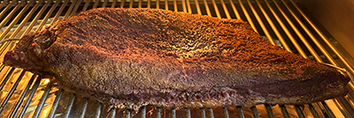
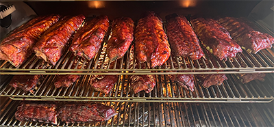
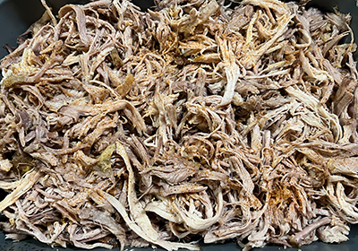

Welcome to Big Daddy Dave's BBQ – Where Smoke Meets Soul!
At Big Daddy Dave's, we're servin' up authentic, slow-smoked barbecue with a whole lotta love and a whole lotta flavor. From tender brisket and fall-off-the-bone ribs to our house-made sauces and Southern sides, every bite tells a story—one steeped in tradition, fire, and family. Whether you're here for a feast with friends or just chasing that perfect pulled pork sandwich, Big Daddy Dave's is the spot where good food and good times come together.
So grab a plate, pull up a chair, and get ready to taste BBQ the way it was meant to be.
Big Flavor. Big Smoke. Big Daddy Dave's.
BBQ Favorites

Thundering Brisket
Slow-smoked with bold Thundering Longhorn seasoning
$14.50/lb
Baby Back Ribs
Tender ribs with our signature sweet BBQ glaze
$20 Half / $34 Full
Cherry Coke Pulled Pork
Sweet and tangy with deep cherry notes
$10 Half / $18 FullOur Story
🔥 Authentic BBQ Tradition
For years, Big Daddy Dave's has been serving the finest
slow-smoked BBQ in Erwin, Tennessee. Our commitment to quality
starts with premium cuts of meat and ends with that perfect smoky
flavor you can't get anywhere else.
👨🍳 Made with Love
Every brisket is smoked low and slow for hours, every rib is
hand-rubbed with our signature seasonings, and every sauce is made
from scratch. We don't take shortcuts because great BBQ takes
time.
🏠 Family Owned & Operated
We're not just a restaurant – we're your neighbors who happen to
make incredible BBQ. Come experience the difference that family
recipes and genuine hospitality make.